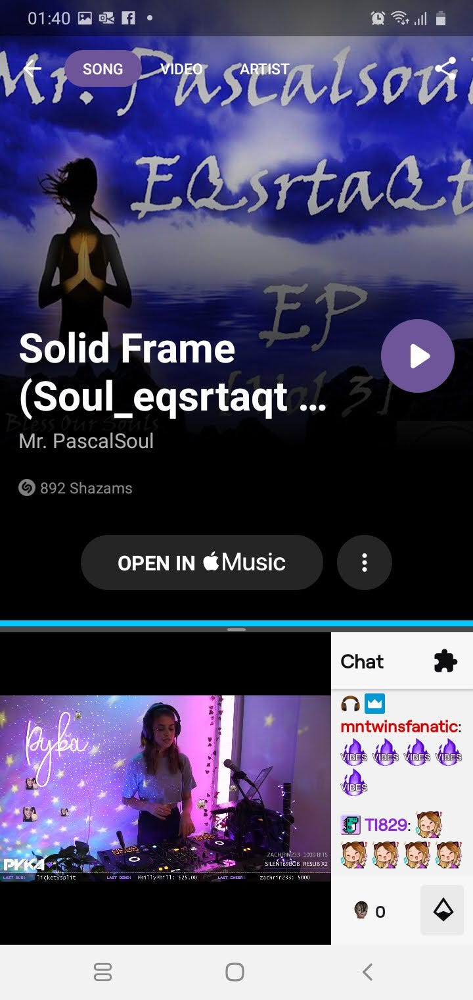

This is what ThisPlayer is about
Example of a tech-enabled idea for all these players

I am right now listening to this sound that is playing on this live cam and I am not promoting business in P…n but also millions of live cam are playing music on such kind of platform. Isn’t it possible for a tech-enabled system to listen to all this streamed sound and get the artist and title of the sound? Wouldn’t it be a great tool for gathering information about musical hits and wouldn’t it be interesting for the music industry?
That’s what this tech-enabled is about and it is still relevant for a tech-entrepreneur to build and operate it.
With a smartphone, I just tested this Tech-enabled idea that could be automated and scaled with algorithms.

And It is really easy to test this idea all you need is a smartphone and an application like Shazam and I am not still remembering how to split the screen like that but do you think that it is not possible for a computer or a smartphone to this itself without your help.
If your answer is yes then you have proven to yourself that this tech-enabled that I am writing about is buildable by a software engineer like you or the one you will engage. If you need me please Don’t hesitate but I will cost you a lot like this 100X software engineer. Or if you need another idea then know that I am into the tech-enabled ideas generation business and I am open to providing you one that fits you better.
Google visited and processed billions of webpage you could be this listen engine that will listen and process billions of live cam and not only store what music is played but also what is said. You could make it accessible to everybody like google of just be B2B tech-enabled platforms for professionals of the music industry. I shared this because I thought that It could be a tech-enabled idea that could interest you and I looked for the slide about this tech-enabled idea but found nothing to say that something document about a tech-enabled idea can be lost or erased because of the lack of storage resource another fact that also highlight that scarcity of resource is affecting me. But Promise that I will share it with you once found because I think that I email the slides of this tech-enabled idea to someone then it should be there in my mailbox.
You could be this Big Listen Engine as big as google if you take this tech-enabled idea as your own and listen.
PS: This tech-enabled idea below was about an app translating in real time the language of the one who is speaking to you it was a long time before such kinds of applications become things.